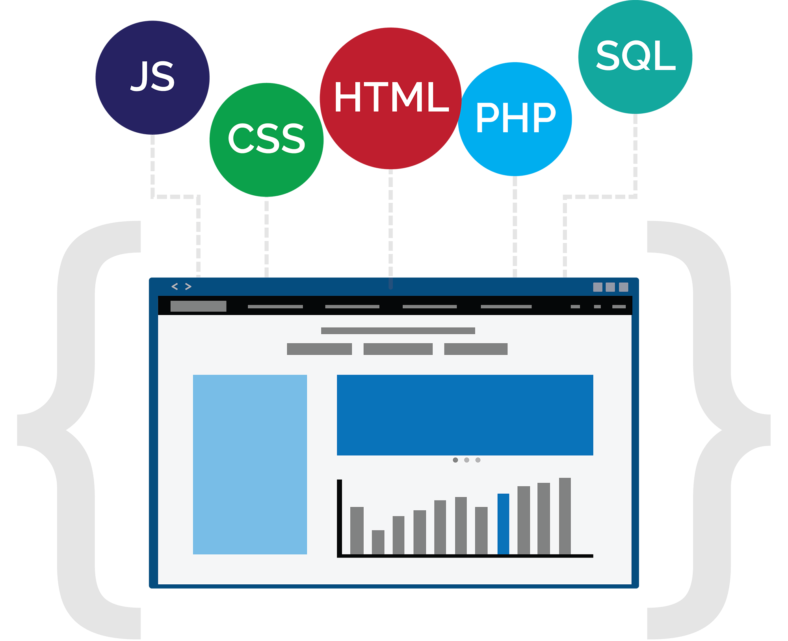

Home
About
Experience
A man who carries a cat by the tail learns something he can learn in no other way.
- Mark Twain
What are my experiences?

Market Operations Engineer
J.B. Hunt Transport, Inc.
May 2015 - Present
Develop automated web based reporting for divisional and executive management decision making
Back end development and UI design of large and cumbersome datasets that display actionable information
Build customized reports and data tables for divisional processes using live and scheduled data from company operations
Market Research Engineer
J.B. Hunt Transport, Inc.
March 2013 - May 2015
Plan, develop, and deploy process improvement projects associated with divisional sales and operations within a Saleforce environment
Build and maintain reports, analytics, and dashboards used for executive decision making and process improvements
Provide customer service and support for internal salespeople and sales support users within a highly customized Salesforce platform
Plan and execute technology centered aspects of large scale, data driven marketing campaigns and special projects